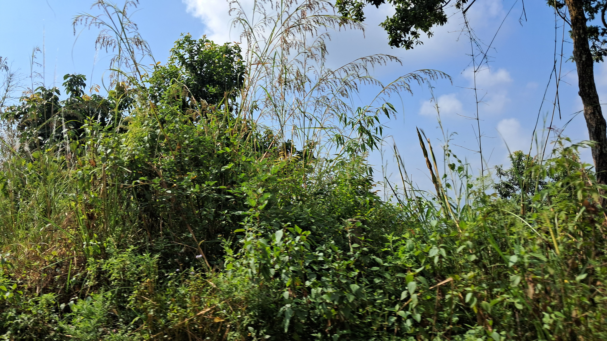
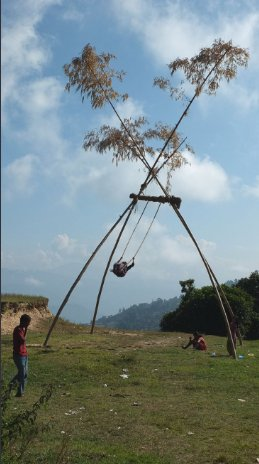
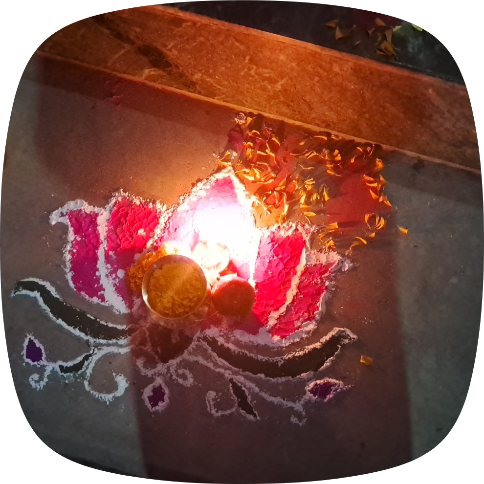
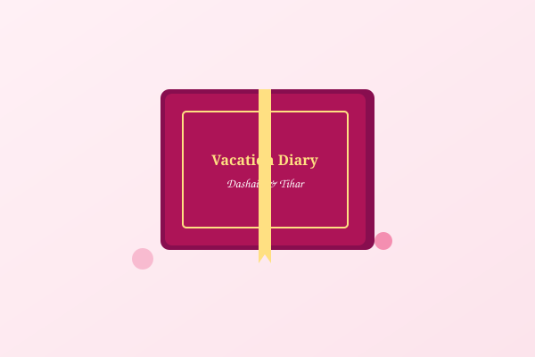

A little collection of moments, laughter, traditions and happiness.
Every holiday has its own little stories. Here are some of the beautiful memories I made during my Dashain and Tihar vacation — from sacred blessings and high swings to twinkling diyos and family warmth.

Vacation highlights with family & festivities
Counting blessings, festive excitement, and slow peaceful days
"The greatest gift of any holiday is time spent with those who love you."
Holidays always begin with a quiet flutter of excitement. After busy months of classes, homework, and exams, the school bell rang for the autumn break. Stepping out into the crisp breeze, knowing that the most awaited festivals of the year were finally here, felt truly magical.
Family, blessings, celebrations and beautiful memories.
"Dashain reminds me how beautiful it is to be surrounded by the people I love."
The festive season truly begins when we sow the barley seeds in the puja room on Ghatasthapana. In the cool darkness, we watered the sand each morning and watched the tender, vibrant yellow shoots of Jamara sprout toward the light. It symbolized hope, life, and the start of our long-awaited school break.
On the tenth day, everyone dressed in their finest new holiday clothes. Elders placed the sacred red Akshata tika on our foreheads, blessed us with Jamara, and gave us sincere wishes of good health, happiness, and success in our studies. The joy of being together is something I will always treasure.

It is a beloved Nepali belief that one should leave the ground at least once a year during Dashain by riding the traditional tall bamboo swing (Linge Ping).
When my turn came, cousins pushed the swing higher and higher. With the cool autumn wind on my face and mountains in the distance, it felt like flying!
Lights, colors, flowers and unforgettable moments.
As dusk arrived on Laxmi Puja, the entire neighborhood was wrapped in golden wonder. We placed clay diyos filled with mustard oil on every balcony ledge, window sill, and doorway. Watching the darkness softly give way to thousands of flickering points of light felt like stepping into a fairy tale.
On the final day of Tihar, we celebrated Bhai Tika. Sisters blessed brothers with the vibrant seven-colored Saptarangi Tika and draped fresh purple Makhamali and golden Sayapatri garlands around their necks. We exchanged sweets, dried fruits, and heartfelt promises to always support one another.
Creating the Rangoli at the main entrance was my favorite creative task of the holidays! We blended bright pink, golden yellow, turquoise, and deep maroon powders into intricate floral mandalas.
At the center, we placed a warm glowing diyo and fresh marigold petals. Everyone who visited stopped to admire the colors!

Some memories deserve to stay forever. Click any photo to enlarge.
Short video clips capturing the festive laughter and glowing evenings.
The special tastes, traditions, and feelings that made this vacation unforgettable.
What these celebrations taught me beyond the fun and feasts

"These holidays gave me beautiful memories that I will always cherish. I am grateful for every little moment, every smile, and every celebration."
With love ♡